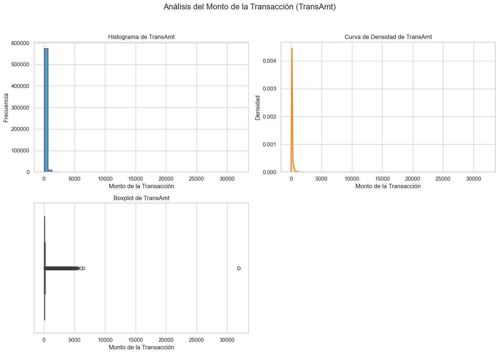
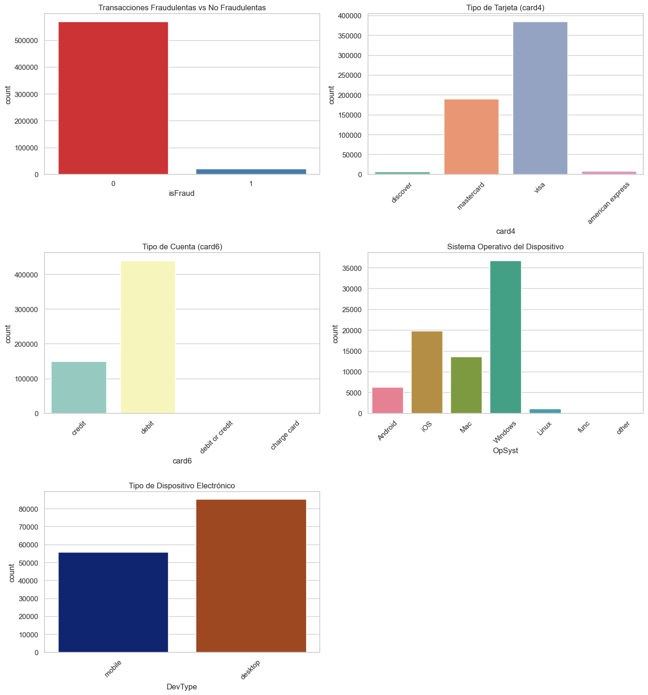
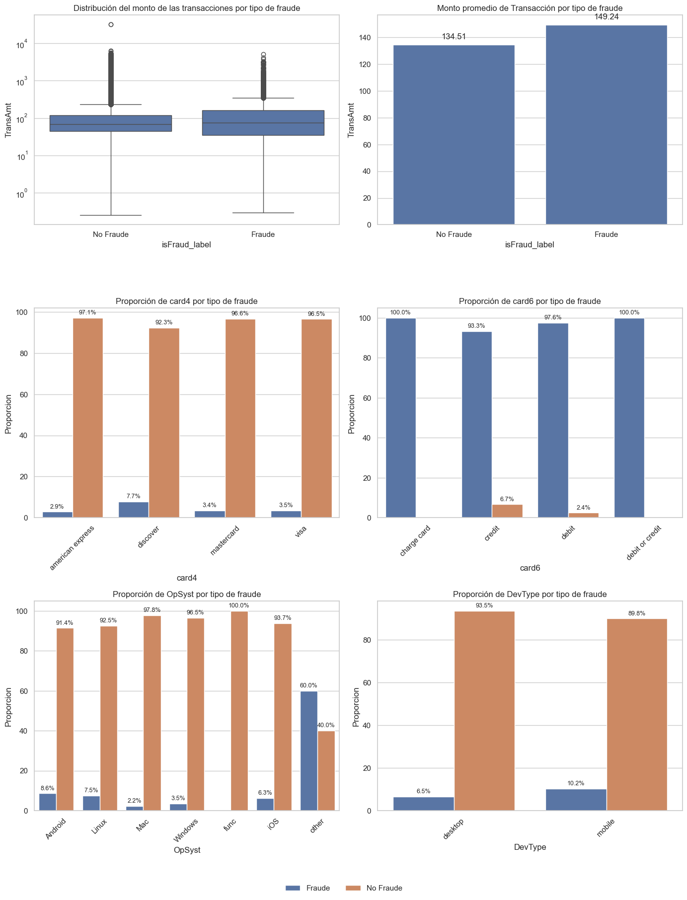
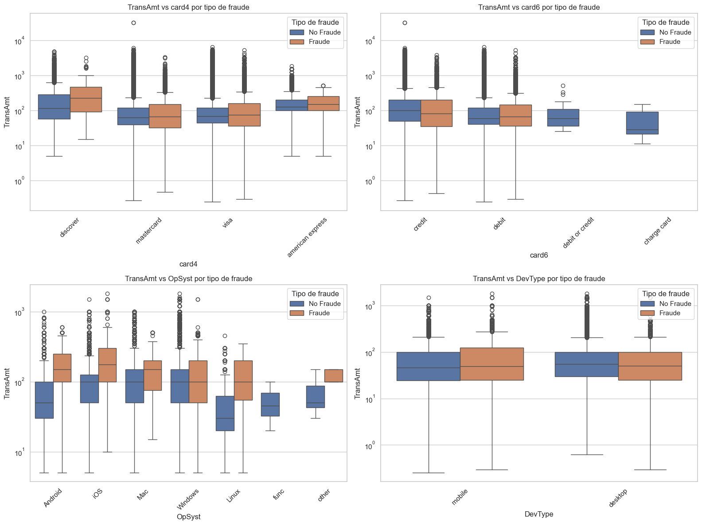

EDA Train_transaction#
Train_transaction#
# -----------------------------------------------------------
# 1. Paquetes necesarios para el análisis
# -----------------------------------------------------------
import pandas as pd
import numpy as np
import seaborn as sns
import matplotlib.pyplot as plt
from scipy.stats import ttest_ind
from scipy.stats import chi2_contingency, ttest_ind
# -----------------------------------------------------------------------
# 2. Cargar los datos de train_transaction desde nuestro disco duro local
# cambia la ruta a la ubicación de tu archivo CSV
# -----------------------------------------------------------------------
train_transaction = pd.read_csv(r"C:/Users/jthow/iCloudDrive/Documents/3_Maestria_Estadistica_UNINORTE/3_Tercer_Semestre/Machine_Learning/Parcial_Practico/fraude/train_transaction.csv")
# -----------------------------------------------------------------------
# 3. Inspeccionar los datos cargados
# -----------------------------------------------------------------------
train_transaction
---------------------------------------------------------------------------
FileNotFoundError Traceback (most recent call last)
Cell In[2], line 6
1 # -----------------------------------------------------------------------
2 # 2. Cargar los datos de train_transaction desde nuestro disco duro local
3 # cambia la ruta a la ubicación de tu archivo CSV
4 # -----------------------------------------------------------------------
----> 6 train_transaction = pd.read_csv(r"C:/Users/jthow/iCloudDrive/Documents/3_Maestria_Estadistica_UNINORTE/3_Tercer_Semestre/Machine_Learning/Parcial_Practico/fraude/train_transaction.csv")
8 # -----------------------------------------------------------------------
9 # 3. Inspeccionar los datos cargados
10 # -----------------------------------------------------------------------
12 train_transaction
File ~/miniconda3/envs/ml_venv/lib/python3.9/site-packages/pandas/io/parsers/readers.py:948, in read_csv(filepath_or_buffer, sep, delimiter, header, names, index_col, usecols, dtype, engine, converters, true_values, false_values, skipinitialspace, skiprows, skipfooter, nrows, na_values, keep_default_na, na_filter, verbose, skip_blank_lines, parse_dates, infer_datetime_format, keep_date_col, date_parser, date_format, dayfirst, cache_dates, iterator, chunksize, compression, thousands, decimal, lineterminator, quotechar, quoting, doublequote, escapechar, comment, encoding, encoding_errors, dialect, on_bad_lines, delim_whitespace, low_memory, memory_map, float_precision, storage_options, dtype_backend)
935 kwds_defaults = _refine_defaults_read(
936 dialect,
937 delimiter,
(...)
944 dtype_backend=dtype_backend,
945 )
946 kwds.update(kwds_defaults)
--> 948 return _read(filepath_or_buffer, kwds)
File ~/miniconda3/envs/ml_venv/lib/python3.9/site-packages/pandas/io/parsers/readers.py:611, in _read(filepath_or_buffer, kwds)
608 _validate_names(kwds.get("names", None))
610 # Create the parser.
--> 611 parser = TextFileReader(filepath_or_buffer, **kwds)
613 if chunksize or iterator:
614 return parser
File ~/miniconda3/envs/ml_venv/lib/python3.9/site-packages/pandas/io/parsers/readers.py:1448, in TextFileReader.__init__(self, f, engine, **kwds)
1445 self.options["has_index_names"] = kwds["has_index_names"]
1447 self.handles: IOHandles | None = None
-> 1448 self._engine = self._make_engine(f, self.engine)
File ~/miniconda3/envs/ml_venv/lib/python3.9/site-packages/pandas/io/parsers/readers.py:1705, in TextFileReader._make_engine(self, f, engine)
1703 if "b" not in mode:
1704 mode += "b"
-> 1705 self.handles = get_handle(
1706 f,
1707 mode,
1708 encoding=self.options.get("encoding", None),
1709 compression=self.options.get("compression", None),
1710 memory_map=self.options.get("memory_map", False),
1711 is_text=is_text,
1712 errors=self.options.get("encoding_errors", "strict"),
1713 storage_options=self.options.get("storage_options", None),
1714 )
1715 assert self.handles is not None
1716 f = self.handles.handle
File ~/miniconda3/envs/ml_venv/lib/python3.9/site-packages/pandas/io/common.py:863, in get_handle(path_or_buf, mode, encoding, compression, memory_map, is_text, errors, storage_options)
858 elif isinstance(handle, str):
859 # Check whether the filename is to be opened in binary mode.
860 # Binary mode does not support 'encoding' and 'newline'.
861 if ioargs.encoding and "b" not in ioargs.mode:
862 # Encoding
--> 863 handle = open(
864 handle,
865 ioargs.mode,
866 encoding=ioargs.encoding,
867 errors=errors,
868 newline="",
869 )
870 else:
871 # Binary mode
872 handle = open(handle, ioargs.mode)
FileNotFoundError: [Errno 2] No such file or directory: 'C:/Users/jthow/iCloudDrive/Documents/3_Maestria_Estadistica_UNINORTE/3_Tercer_Semestre/Machine_Learning/Parcial_Practico/fraude/train_transaction.csv'
TRAIN TRANSACTION
Estructura de la Base de Datos Filas y Columnas:
La base de datos contiene 590,540 filas y 394 columnas. Esto indica un conjunto de datos bastante grande y complejo. Columnas Principales:
TransactionID: Un identificador único para cada transacción. Es crucial para rastrear y referenciar transacciones individuales. isFraud: Una variable binaria que indica si la transacción es fraudulenta (1) o no (0). Esta es la variable objetivo para modelos de detección de fraudes. TransactionDT: La fecha y hora de la transacción, representada como un número entero. Este campo es esencial para el análisis temporal. TransactionAmt: El monto de la transacción. Es una variable continua que puede ser útil para análisis financieros y detección de fraudes. ProductCD: Un código que representa el tipo de producto involucrado en la transacción. Puede ser categórico y útil para segmentar los datos por tipo de producto. card1 a card6: Información relacionada con la tarjeta utilizada en la transacción. Estos campos pueden incluir detalles como el número de tarjeta (posiblemente encriptado), el tipo de tarjeta, el emisor, etc. V330 a V339: Estas columnas parecen ser variables adicionales, posiblemente características anonimizadas o codificadas. Los valores NaN indican que estas columnas pueden tener datos faltantes o no aplicables para ciertas transacciones.
# -----------------------------------------------------------------------
# 4. Cargar los datos de train_identity desde nuestro disco duro local
# cambia la ruta a la ubicación de tu archivo CSV
# -----------------------------------------------------------------------
train_identity = pd.read_csv(r"C:/Users/jthow/iCloudDrive/Documents/3_Maestria_Estadistica_UNINORTE/3_Tercer_Semestre/Machine_Learning/Parcial_Practico/fraude/train_identity.csv")
# -----------------------------------------------------------------------
# 5. Inspeccionar los datos cargados
# -----------------------------------------------------------------------
train_identity
| TransactionID | id_01 | id_02 | id_03 | id_04 | id_05 | id_06 | id_07 | id_08 | id_09 | ... | id_31 | id_32 | id_33 | id_34 | id_35 | id_36 | id_37 | id_38 | DeviceType | DeviceInfo | |
|---|---|---|---|---|---|---|---|---|---|---|---|---|---|---|---|---|---|---|---|---|---|
| 0 | 2987004 | 0.0 | 70787.0 | NaN | NaN | NaN | NaN | NaN | NaN | NaN | ... | samsung browser 6.2 | 32.0 | 2220x1080 | match_status:2 | T | F | T | T | mobile | SAMSUNG SM-G892A Build/NRD90M |
| 1 | 2987008 | -5.0 | 98945.0 | NaN | NaN | 0.0 | -5.0 | NaN | NaN | NaN | ... | mobile safari 11.0 | 32.0 | 1334x750 | match_status:1 | T | F | F | T | mobile | iOS Device |
| 2 | 2987010 | -5.0 | 191631.0 | 0.0 | 0.0 | 0.0 | 0.0 | NaN | NaN | 0.0 | ... | chrome 62.0 | NaN | NaN | NaN | F | F | T | T | desktop | Windows |
| 3 | 2987011 | -5.0 | 221832.0 | NaN | NaN | 0.0 | -6.0 | NaN | NaN | NaN | ... | chrome 62.0 | NaN | NaN | NaN | F | F | T | T | desktop | NaN |
| 4 | 2987016 | 0.0 | 7460.0 | 0.0 | 0.0 | 1.0 | 0.0 | NaN | NaN | 0.0 | ... | chrome 62.0 | 24.0 | 1280x800 | match_status:2 | T | F | T | T | desktop | MacOS |
| ... | ... | ... | ... | ... | ... | ... | ... | ... | ... | ... | ... | ... | ... | ... | ... | ... | ... | ... | ... | ... | ... |
| 144228 | 3577521 | -15.0 | 145955.0 | 0.0 | 0.0 | 0.0 | 0.0 | NaN | NaN | 0.0 | ... | chrome 66.0 for android | NaN | NaN | NaN | F | F | T | F | mobile | F3111 Build/33.3.A.1.97 |
| 144229 | 3577526 | -5.0 | 172059.0 | NaN | NaN | 1.0 | -5.0 | NaN | NaN | NaN | ... | chrome 55.0 for android | 32.0 | 855x480 | match_status:2 | T | F | T | F | mobile | A574BL Build/NMF26F |
| 144230 | 3577529 | -20.0 | 632381.0 | NaN | NaN | -1.0 | -36.0 | NaN | NaN | NaN | ... | chrome 65.0 for android | NaN | NaN | NaN | F | F | T | F | mobile | Moto E (4) Plus Build/NMA26.42-152 |
| 144231 | 3577531 | -5.0 | 55528.0 | 0.0 | 0.0 | 0.0 | -7.0 | NaN | NaN | 0.0 | ... | chrome 66.0 | 24.0 | 2560x1600 | match_status:2 | T | F | T | F | desktop | MacOS |
| 144232 | 3577534 | -45.0 | 339406.0 | NaN | NaN | -10.0 | -100.0 | NaN | NaN | NaN | ... | chrome 66.0 for android | NaN | NaN | NaN | F | F | T | F | mobile | RNE-L03 Build/HUAWEIRNE-L03 |
144233 rows × 41 columns
La tabla presentada contiene 144,233 filas y 41 columnas, proporcionando una visión detallada de diversas características de las transacciones. Cada fila representa una transacción única identificada por TransactionID, con columnas adicionales que incluyen identificadores numéricos (id_01 a id_38), tipo de dispositivo (DeviceType) y información específica del dispositivo (DeviceInfo). Los identificadores numéricos muestran una variedad de valores, incluyendo algunos faltantes (NaN), lo que sugiere la necesidad de manejo de datos faltantes. El tipo de dispositivo indica si la transacción se realizó desde un dispositivo móvil o de escritorio, mientras que DeviceInfo proporciona detalles adicionales como el modelo y el sistema operativo del dispositivo. En conjunto, esta tabla ofrece una rica fuente de información para el análisis transaccional, destacando la diversidad de dispositivos y sistemas operativos utilizados, así como la presencia de datos faltantes que deben ser considerados en cualquier análisis posterior.
# -----------------------------------------------------------------------
# 7. Paquetes necesarios para medir el tiempo de ejecución
# -----------------------------------------------------------------------
import time
import pandas as pd
# Lista para almacenar los tiempos de ejecución
execution_times = []
#-------------------------------------------------------------------------
# 8. Fusionar los dos conjuntos de datos train_transaction y train_identity en uno solo para redefinir FD_train
#-------------------------------------------------------------------------
start_time = time.time() # Iniciar el cronómetro
FD_train = pd.merge(train_transaction, train_identity, on='TransactionID', how='left')
end_time = time.time() # Detener el cronómetro
elapsed_time = end_time - start_time
execution_times.append(("Fusión de DataFrames", elapsed_time))
#-------------------------------------------------------------------------
# 7. Guardar el DataFrame fusionado en un archivo CSV en la ruta especificada
#-------------------------------------------------------------------------
start_time = time.time() # Iniciar el cronómetro
FD_train.to_csv("C:/Users/jthow/iCloudDrive/Documents/3_Maestria_Estadistica_UNINORTE/3_Tercer_Semestre/Machine_Learning/Parcial_Practico/FD_train.csv", index=False)
end_time = time.time() # Detener el cronómetro
elapsed_time = end_time - start_time
execution_times.append(("Guardado del CSV", elapsed_time))
#-------------------------------------------------------------------------
# 8. Inspeccionar los datos fusionados
#-------------------------------------------------------------------------
start_time = time.time() # Iniciar el cronómetro
print(FD_train.head()) # Muestra las primeras filas del DataFrame
end_time = time.time() # Detener el cronómetro
elapsed_time = end_time - start_time
execution_times.append(("Inspección de datos", elapsed_time))
#-------------------------------------------------------------------------
# 9. Mostrar los tiempos de ejecución en una tabla
# Convertir los tiempos a minutos y segundos
#-------------------------------------------------------------------------
formatted_times = [(desc, f"{int(t // 60)} minutos y {int(t % 60)} segundos") for desc, t in execution_times]
# ----------------------------------------------------------
# 10. Crear un DataFrame para mostrar los tiempos
# ----------------------------------------------------------
times_df = pd.DataFrame(formatted_times, columns=["Descripción", "Tiempo Transcurrido"])
print(times_df)
TransactionID isFraud TransactionDT TransactionAmt ProductCD card1 \
0 2987000 0 86400 68.5 W 13926
1 2987001 0 86401 29.0 W 2755
2 2987002 0 86469 59.0 W 4663
3 2987003 0 86499 50.0 W 18132
4 2987004 0 86506 50.0 H 4497
card2 card3 card4 card5 ... id_31 id_32 \
0 NaN 150.0 discover 142.0 ... NaN NaN
1 404.0 150.0 mastercard 102.0 ... NaN NaN
2 490.0 150.0 visa 166.0 ... NaN NaN
3 567.0 150.0 mastercard 117.0 ... NaN NaN
4 514.0 150.0 mastercard 102.0 ... samsung browser 6.2 32.0
id_33 id_34 id_35 id_36 id_37 id_38 DeviceType \
0 NaN NaN NaN NaN NaN NaN NaN
1 NaN NaN NaN NaN NaN NaN NaN
2 NaN NaN NaN NaN NaN NaN NaN
3 NaN NaN NaN NaN NaN NaN NaN
4 2220x1080 match_status:2 T F T T mobile
DeviceInfo
0 NaN
1 NaN
2 NaN
3 NaN
4 SAMSUNG SM-G892A Build/NRD90M
[5 rows x 434 columns]
Descripción Tiempo Transcurrido
0 Fusión de DataFrames 0 minutos y 17 segundos
1 Guardado del CSV 2 minutos y 3 segundos
2 Inspección de datos 0 minutos y 0 segundos
La tabla presentada muestra un extracto de un conjunto de datos transaccionales que incluye 5 filas y 434 columnas, proporcionando una visión detallada de diversas características de las transacciones. Cada fila representa una transacción única identificada por TransactionID, con columnas adicionales que incluyen la variable binaria isFraud (indicando si la transacción es fraudulenta o no), la fecha y hora de la transacción (TransactionDT), el monto de la transacción (TransactionAmt), el tipo de producto (ProductCD), y detalles de la tarjeta utilizada (card1 a card6). Además, la tabla incluye identificadores numéricos adicionales (id_01 a id_38), tipo de dispositivo (DeviceType) e información específica del dispositivo (DeviceInfo). Los datos muestran una variedad de valores, incluyendo algunos faltantes (NaN), lo que sugiere la necesidad de manejo de datos faltantes. El proceso de fusión de DataFrames tomó 17 segundos, mientras que la guardar el archivo CSV tomó 2 minutos y 3 segundos, y la inspección de datos se realizó en menos de un segundo. En conjunto, esta tabla ofrece una rica fuente de información para el análisis transaccional, destacando la diversidad de dispositivos y sistemas operativos utilizados, así como la presencia de datos faltantes que deben ser considerados en cualquier análisis posterior.
#-------------------------------------------------------------------------
# 11. Importar los paquetes necesarios
#-------------------------------------------------------------------------
import zipfile
import pandas as pd
import time
#-------------------------------------------------------------------------
# 12. Leer el archivo CSV 'FD1.csv' desde el ZIP
# Ruta al archivo ZIP
#-------------------------------------------------------------------------
zip_path = "C:/Users/jthow/iCloudDrive/Documents/3_Maestria_Estadistica_UNINORTE/3_Tercer_Semestre/Machine_Learning/Parcial_Practico/Fraude_Data_FD1_FD2.zip"
#-------------------------------------------------------------------------
# 13. Lista para almacenar los tiempos de ejecución
# --------------------------------------------------------------------------
execution_times = []
start_time = time.time() # Iniciar el cronómetro
with zipfile.ZipFile(zip_path, 'r') as zip_ref:
with zip_ref.open('FD1.csv') as file:
FD1 = pd.read_csv(file)
end_time = time.time() # Detener el cronómetro
elapsed_time = end_time - start_time
execution_times.append(("Lectura del CSV", elapsed_time))
#-------------------------------------------------------------------------
# 14. Mostrar el DataFrame FD1
#-------------------------------------------------------------------------
start_time = time.time() # Iniciar el cronómetro
print(FD1.head()) # Muestra las primeras filas del DataFrame
end_time = time.time() # Detener el cronómetro
elapsed_time = end_time - start_time
execution_times.append(("Visualización del DataFrame", elapsed_time))
#-------------------------------------------------------------------------
# 15. Mostrar los tiempos de ejecución en una tabla
# Convertir los tiempos a minutos y segundos
#-------------------------------------------------------------------------
formatted_times = [(desc, f"{int(t // 60)} minutos y {int(t % 60)} segundos") for desc, t in execution_times]
#-------------------------------------------------------------------------
# 16. Crear un DataFrame para mostrar los tiempos
#-------------------------------------------------------------------------
times_df = pd.DataFrame(formatted_times, columns=["Descripción", "Tiempo Transcurrido"])
print("\nTiempos de ejecución:")
print(times_df)
TransID isFraud TransDT TransAmt ProdCD card1 card2 card3 \
0 2987000 0 86400 68.5 W 13926 NaN 150.0
1 2987001 0 86401 29.0 W 2755 404.0 150.0
2 2987002 0 86469 59.0 W 4663 490.0 150.0
3 2987003 0 86499 50.0 W 18132 567.0 150.0
4 2987004 0 86506 50.0 H 4497 514.0 150.0
card4 card5 ... id_31 id_32 id_33 \
0 discover 142.0 ... NaN NaN NaN
1 mastercard 102.0 ... NaN NaN NaN
2 visa 166.0 ... NaN NaN NaN
3 mastercard 117.0 ... NaN NaN NaN
4 mastercard 102.0 ... samsung browser 6.2 32.0 2220x1080
id_34 id_35 id_36 id_37 id_38 DevType \
0 NaN NaN NaN NaN NaN NaN
1 NaN NaN NaN NaN NaN NaN
2 NaN NaN NaN NaN NaN NaN
3 NaN NaN NaN NaN NaN NaN
4 match_status:2 T F T T mobile
DevInfo
0 NaN
1 NaN
2 NaN
3 NaN
4 SAMSUNG SM-G892A Build/NRD90M
[5 rows x 434 columns]
Tiempos de ejecución:
Descripción Tiempo Transcurrido
0 Lectura del CSV 0 minutos y 41 segundos
1 Visualización del DataFrame 0 minutos y 0 segundos
Número de observaciones (reemplazar a apartir de aquí con el dataframe - test)
La tabla presentada muestra un extracto de un conjunto de datos transaccionales con 5 filas y 434 columnas, proporcionando una visión detallada de diversas características de las transacciones. Cada fila representa una transacción única identificada por TransID, con columnas adicionales que incluyen la variable binaria isFraud (indicando si la transacción es fraudulenta o no), la fecha y hora de la transacción (TransDT), el monto de la transacción (TransAmt), el tipo de producto (ProdCD), y detalles de la tarjeta utilizada (card1 a card6). Además, la tabla incluye identificadores numéricos adicionales (id_01 a id_38), tipo de dispositivo (DevType) e información específica del dispositivo (DevInfo). Los datos muestran una variedad de valores, incluyendo algunos faltantes (NaN), lo que sugiere la necesidad de manejo de datos faltantes. El proceso de lectura del archivo CSV tomó 41 segundos, mientras que la visualización del DataFrame se realizó en menos de un segundo. En conjunto, esta tabla ofrece una rica fuente de información para el análisis transaccional, destacando la diversidad de dispositivos y sistemas operativos utilizados, así como la presencia de datos faltantes que deben ser considerados en cualquier análisis posterior.
#-------------------------------------------------------------------------
# 17. Importar los paquetes necesarios
#-------------------------------------------------------------------------
import pandas as pd
import time
#-------------------------------------------------------------------------
# 18. Calcular el número de observaciones no nulas y el porcentaje de valores faltantes
# Lista para almacenar los tiempos de ejecución
#-------------------------------------------------------------------------
execution_times = []
start_time = time.time() # Iniciar el cronómetro
#-------------------------------------------------------------------------
# 19. Calcular el número de observaciones no nulas y el porcentaje de valores faltantes
# -------------------------------------------------------------------------
num_obs = FD1.count()
#-------------------------------------------------------------------------
# 20. Total de filas (observaciones en el DataFrame)
#-------------------------------------------------------------------------
total_rows = FD1.shape[0]
#-------------------------------------------------------------------------
# 21. Calcular el porcentaje de valores faltantes por columna
#-------------------------------------------------------------------------
missing_pct = ((total_rows - num_obs) / total_rows * 100).round(2)
#-------------------------------------------------------------------------
# 22. Unir en un solo DataFrame
# --------------------------------------------------------------------------
obs_summary = pd.DataFrame({
'non_null_count': num_obs,
'missing_percentage': missing_pct
})
end_time = time.time() # Detener el cronómetro
elapsed_time = end_time - start_time
execution_times.append(("Cálculo de observaciones y valores faltantes", elapsed_time))
#-------------------------------------------------------------------------
# 23. Mostrar el resumen de observaciones
#-------------------------------------------------------------------------
start_time = time.time() # Iniciar el cronómetro
print(obs_summary)
end_time = time.time() # Detener el cronómetro
elapsed_time = end_time - start_time
execution_times.append(("Visualización del resumen de observaciones", elapsed_time))
#-------------------------------------------------------------------------
# 24. Mostrar los tiempos de ejecución en una tabla
# Convertir los tiempos a minutos y segundos
#-------------------------------------------------------------------------
formatted_times = [(desc, f"{int(t // 60)} minutos y {int(t % 60)} segundos") for desc, t in execution_times]
#-------------------------------------------------------------------------
# 25. Crear un DataFrame para mostrar los tiempos
#-------------------------------------------------------------------------
times_df = pd.DataFrame(formatted_times, columns=["Descripción", "Tiempo Transcurrido"])
print("\nTiempos de ejecución:")
print(times_df)
non_null_count missing_percentage
TransID 590540 0.00
isFraud 590540 0.00
TransDT 590540 0.00
TransAmt 590540 0.00
ProdCD 590540 0.00
... ... ...
id_36 140985 76.13
id_37 140985 76.13
id_38 140985 76.13
DevType 140810 76.16
DevInfo 118666 79.91
[434 rows x 2 columns]
Tiempos de ejecución:
Descripción Tiempo Transcurrido
0 Cálculo de observaciones y valores faltantes 0 minutos y 8 segundos
1 Visualización del resumen de observaciones 0 minutos y 0 segundos
Estructura de la Base de Datos Filas y Columnas:
La base de datos contiene 144,233 filas y 41 columnas. Esto indica un conjunto de datos moderadamente grande. Columnas Principales:
TransactionID: Un identificador único para cada transacción. Es crucial para rastrear y referenciar transacciones individuales. id_01 a id_38: Estas columnas parecen ser identificadores o características adicionales relacionadas con la transacción. Algunas de estas columnas tienen valores numéricos, mientras que otras tienen valores categóricos o booleanos (T/F). DeviceType: Indica el tipo de dispositivo utilizado en la transacción (por ejemplo, “mobile”, “desktop”). Esta información es útil para segmentar el análisis por tipo de dispositivo. DeviceInfo: Proporciona detalles adicionales sobre el dispositivo, como el modelo y el sistema operativo. Esto puede ser útil para identificar patrones específicos de dispositivos.
#-------------------------------------------------------------------------
# 26. Importar los paquetes necesarios
#-------------------------------------------------------------------------
import pandas as pd
import time
#-------------------------------------------------------------------------
# 27. Calcular estadísticas básicas para columnas numéricas
#-------------------------------------------------------------------------
#--------------------------------------------------------------------------
# 28. Lista para almacenar los tiempos de ejecución
#--------------------------------------------------------------------------
execution_times = []
start_time = time.time() # Iniciar el cronómetro
# Calcular estadísticas básicas para columnas numéricas
estadisticas_numericas = FD1.describe()
print("Estadísticas básicas para columnas numéricas:")
print(estadisticas_numericas)
end_time = time.time() # Detener el cronómetro
elapsed_time = end_time - start_time
execution_times.append(("Cálculo de estadísticas numéricas", elapsed_time))
#-------------------------------------------------------------------------
# 29. Filtrar solo columnas numéricas y calcular estadísticas para columnas no numéricas
#-------------------------------------------------------------------------
start_time = time.time() # Iniciar el cronómetro
#--------------------------------------------------------------------------
# 30. Filtrar solo columnas numéricas
#--------------------------------------------------------------------------
columnas_numericas = FD1.select_dtypes(include=['number'])
#--------------------------------------------------------------------------
# 31. Calcular estadísticas para columnas no numéricas (categóricas)
#--------------------------------------------------------------------------
estadisticas_categoricas = FD1.describe(include='object')
print("\nEstadísticas básicas para columnas no numéricas:")
print(estadisticas_categoricas)
end_time = time.time() # Detener el cronómetro
elapsed_time = end_time - start_time
execution_times.append(("Cálculo de estadísticas categóricas", elapsed_time))
#-------------------------------------------------------------------------
# 32. Mostrar los tiempos de ejecución en una tabla
# Convertir los tiempos a minutos y segundos
#-------------------------------------------------------------------------
formatted_times = [(desc, f"{int(t // 60)} minutos y {int(t % 60)} segundos") for desc, t in execution_times]
#-------------------------------------------------------------------------
# 33. Crear un DataFrame para mostrar los tiempos
#-------------------------------------------------------------------------
times_df = pd.DataFrame(formatted_times, columns=["Descripción", "Tiempo Transcurrido"])
print("\nTiempos de ejecución:")
print(times_df)
Estadísticas básicas para columnas numéricas:
TransID isFraud TransDT TransAmt \
count 5.905400e+05 590540.000000 5.905400e+05 590540.000000
mean 3.282270e+06 0.034990 7.372311e+06 135.027176
std 1.704744e+05 0.183755 4.617224e+06 239.162522
min 2.987000e+06 0.000000 8.640000e+04 0.251000
25% 3.134635e+06 0.000000 3.027058e+06 43.321000
50% 3.282270e+06 0.000000 7.306528e+06 68.769000
75% 3.429904e+06 0.000000 1.124662e+07 125.000000
max 3.577539e+06 1.000000 1.581113e+07 31937.391000
card1 card2 card3 card5 \
count 590540.000000 581607.000000 588975.000000 586281.000000
mean 9898.734658 362.555488 153.194925 199.278897
std 4901.170153 157.793246 11.336444 41.244453
min 1000.000000 100.000000 100.000000 100.000000
25% 6019.000000 214.000000 150.000000 166.000000
50% 9678.000000 361.000000 150.000000 226.000000
75% 14184.000000 512.000000 150.000000 226.000000
max 18396.000000 600.000000 231.000000 237.000000
addr1 addr2 ... id_17 id_18 \
count 524834.000000 524834.000000 ... 139369.000000 45113.000000
mean 290.733794 86.800630 ... 189.451377 14.237337
std 101.741072 2.690623 ... 30.375360 1.561302
min 100.000000 10.000000 ... 100.000000 10.000000
25% 204.000000 87.000000 ... 166.000000 13.000000
50% 299.000000 87.000000 ... 166.000000 15.000000
75% 330.000000 87.000000 ... 225.000000 15.000000
max 540.000000 102.000000 ... 229.000000 29.000000
id_19 id_20 id_21 id_22 id_24 \
count 139318.000000 139261.000000 5159.000000 5169.000000 4747.000000
mean 353.128174 403.882666 368.269820 16.002708 12.800927
std 141.095343 152.160327 198.847038 6.897665 2.372447
min 100.000000 100.000000 100.000000 10.000000 11.000000
25% 266.000000 256.000000 252.000000 14.000000 11.000000
50% 341.000000 472.000000 252.000000 14.000000 11.000000
75% 427.000000 533.000000 486.500000 14.000000 15.000000
max 671.000000 661.000000 854.000000 44.000000 26.000000
id_25 id_26 id_32
count 5132.000000 5163.000000 77586.000000
mean 329.608924 149.070308 26.508597
std 97.461089 32.101995 3.737502
min 100.000000 100.000000 0.000000
25% 321.000000 119.000000 24.000000
50% 321.000000 149.000000 24.000000
75% 371.000000 169.000000 32.000000
max 548.000000 216.000000 32.000000
[8 rows x 403 columns]
Estadísticas básicas para columnas no numéricas:
ProdCD card4 card6 P_Email R_Email M1 M2 M3 \
count 590540 588963 588969 496084 137291 319440 319440 319440
unique 5 4 4 59 60 2 2 2
top W visa debit gmail.com gmail.com T T T
freq 439670 384767 439938 228355 57147 319415 285468 251731
M4 M5 ... OpSyst id_31 id_33 id_34 \
count 309096 240058 ... 77565 140282 73289 77805
unique 3 2 ... 7 130 260 4
top M0 F ... Windows chrome 63.0 1920x1080 match_status:2
freq 196405 132491 ... 36739 22000 16874 60011
id_35 id_36 id_37 id_38 DevType DevInfo
count 140985 140985 140985 140985 140810 118666
unique 2 2 2 2 2 1786
top T F T F desktop Windows
freq 77814 134066 110452 73922 85165 47722
[4 rows x 31 columns]
Tiempos de ejecución:
Descripción Tiempo Transcurrido
0 Cálculo de estadísticas numéricas 0 minutos y 27 segundos
1 Cálculo de estadísticas categóricas 0 minutos y 7 segundos
El conjunto de datos analizado contiene 590,540 transacciones, con una media de 135.03 en montos de transacción y una variabilidad significativa, incluyendo valores atípicos. La mayoría de las transacciones no son fraudulentas, lo que indica un desequilibrio de clases. Las transacciones se realizan principalmente con tarjetas ‘visa’ y desde dispositivos ‘desktop’ con sistema operativo ‘Windows’. Algunas columnas presentan valores faltantes que requieren manejo especial. Los tiempos de ejecución para calcular estadísticas fueron eficientes, permitiendo un análisis rápido y detallado.
# Calcular asimetría y curtosis solo para las columnas numéricas
asimetria = columnas_numericas.skew()
curtosis = columnas_numericas.kurt()
print("/nAsimetría de las columnas numéricas:")
print(asimetria)
print("/nCurtosis de las columnas numéricas:")
print(curtosis)
/nAsimetría de las columnas numéricas:
TransID -3.024053e-16
isFraud 5.061223e+00
TransDT 1.311547e-01
TransAmt 1.437449e+01
card1 -4.092898e-02
...
id_22 3.231576e+00
id_24 1.293864e+00
id_25 4.591363e-02
id_26 7.327940e-03
id_32 7.410398e-01
Length: 403, dtype: float64
/nCurtosis de las columnas numéricas:
TransID -1.200000
isFraud 23.616056
TransDT -1.229137
TransAmt 1123.956907
card1 -1.136158
...
id_22 8.603965
id_24 2.816539
id_25 0.005613
id_26 -0.863066
id_32 -1.132899
Length: 403, dtype: float64
El análisis de asimetría y curtosis revela que varias columnas numéricas presentan distribuciones sesgadas y con colas pesadas. La columna isFraud muestra una fuerte asimetría positiva (5.06) y una curtosis extremadamente alta (23.62), indicando una concentración de valores bajos y la presencia de valores atípicos. Similarmente, TransAmt tiene una asimetría positiva significativa (14.37) y una curtosis muy alta (1123.96), lo que sugiere una distribución con colas muy pesadas y valores atípicos extremos. Otras columnas, como id_22 y id_24, también muestran asimetrías y curtosis positivas, indicando distribuciones sesgadas a la derecha y con colas pesadas. En contraste, TransID y card1 presentan distribuciones casi simétricas y platicúrticas, con colas más ligeras. Estas características son cruciales para entender la estructura de los datos y deben considerarse al aplicar modelos de machine learning, ya que las distribuciones sesgadas y leptocúrticas pueden afectar el rendimiento y la interpretación de los modelos.
# Seleccionamos las seis variables del DataFrame FD1
variables_seleccionadas = ['isFraud', 'TransAmt', 'card4', 'card6', 'OpSyst', 'DevType']
df_seleccionadas = FD1[variables_seleccionadas]
# Diccionario con descripciones de cada variable
descripciones = {
'isFraud': 'Transacciones fraudulentas y no fraudulentas',
'TransAmt': 'Monto de la transacción',
'card4': 'Tipo de tarjeta (Visa, MasterCard, etc.)',
'card6': 'Tipo de cuenta (crédito, débito)',
'OpSyst': 'Sistema operativo del dispositivo electrónico',
'DevType': 'Tipo de dispositivo electrónico'
}
# Mostrar nombre de cada variable con su descripción
for var in variables_seleccionadas:
print(f"{var}: {descripciones[var]}")
isFraud: Transacciones fraudulentas y no fraudulentas
TransAmt: Monto de la transacción
card4: Tipo de tarjeta (Visa, MasterCard, etc.)
card6: Tipo de cuenta (crédito, débito)
OpSyst: Sistema operativo del dispositivo electrónico
DevType: Tipo de dispositivo electrónico
Las columnas isFraud, TransAmt, card4, card6, OpSyst y DevType son esenciales para el análisis de transacciones y la detección de fraudes. isFraud es la variable objetivo, crucial para entrenar modelos de machine learning, y su distribución sesgada hacia transacciones no fraudulentas indica un desequilibrio de clases. TransAmt es fundamental para análisis financieros, con una distribución sesgada a la derecha y una alta curtosis, lo que sugiere la presencia de valores atípicos extremos. card4 y card6 permiten segmentar el análisis por tipo de tarjeta y cuenta, revelando patrones específicos de fraude. OpSyst y DevType proporcionan información sobre la plataforma y el tipo de dispositivo utilizado, lo que puede identificar dispositivos vulnerables a fraudes. En conjunto, estas variables ofrecen un contexto rico que mejora la precisión y la interpretabilidad de los modelos de detección de fraudes.
# Estilo general
sns.set(style="whitegrid")
# ========================
# Parte 1: TransAmt (histograma + curva de densidad + boxplot)
# ========================
fig1, axes1 = plt.subplots(2, 2, figsize=(14, 10))
fig1.suptitle('Análisis del Monto de la Transacción (TransAmt)', fontsize=16)
# Histograma
sns.histplot(FD1['TransAmt'], bins=50, kde=False,
color='#1f77b4', edgecolor='black', ax=axes1[0, 0])
axes1[0, 0].set_title('Histograma de TransAmt')
axes1[0, 0].set_xlabel('Monto de la Transacción')
axes1[0, 0].set_ylabel('Frecuencia')
# Curva de densidad
sns.kdeplot(FD1['TransAmt'], fill=True, color='#ff7f0e', linewidth=2, ax=axes1[0, 1])
axes1[0, 1].set_title('Curva de Densidad de TransAmt')
axes1[0, 1].set_xlabel('Monto de la Transacción')
axes1[0, 1].set_ylabel('Densidad')
# Boxplot
sns.boxplot(x=FD1['TransAmt'], color='#2ca02c', ax=axes1[1, 0])
axes1[1, 0].set_title('Boxplot de TransAmt')
axes1[1, 0].set_xlabel('Monto de la Transacción')
# Eliminar el cuarto gráfico (vacío)
fig1.delaxes(axes1[1, 1])
# Ajustar diseño
plt.tight_layout(rect=[0, 0, 1, 0.95])
plt.show()

El análisis del monto de la transacción (TransAmt) se presenta a través de tres gráficos: un histograma, una curva de densidad y un boxplot. El histograma muestra una distribución altamente sesgada a la derecha, con la mayoría de las transacciones concentradas en montos bajos y muy pocas transacciones con montos extremadamente altos. La curva de densidad confirma esta observación, mostrando una densidad muy alta en montos bajos y una rápida disminución a medida que el monto aumenta. El boxplot revela la presencia de valores atípicos significativos, con algunos montos de transacción que superan los 30,000, lo que indica una gran variabilidad en los datos. En conjunto, estos gráficos destacan la naturaleza sesgada y la alta curtosis de la distribución de TransAmt, lo que es crucial para entender y modelar el comportamiento de las transacciones.
#-------------------------------------------------------------------------
# Importar los paquetes necesarios
#-------------------------------------------------------------------------
import seaborn as sns
import matplotlib.pyplot as plt
import time
#-------------------------------------------------------------------------
# Estilo general
#-------------------------------------------------------------------------
sns.set(style="whitegrid")
#-------------------------------------------------------------------------
# 1. Crear figura y ejes: 3 filas x 2 columnas
#-------------------------------------------------------------------------
# Lista para almacenar los tiempos de ejecución
execution_times = []
start_time = time.time() # Iniciar el cronómetro
fig2, axes2 = plt.subplots(3, 2, figsize=(14, 15))
axes2 = axes2.flatten()
end_time = time.time() # Detener el cronómetro
elapsed_time = end_time - start_time
execution_times.append(("Creación de figura y ejes", elapsed_time))
#-------------------------------------------------------------------------
# 2. Generar gráficos categóricos
#-------------------------------------------------------------------------
start_time = time.time() # Iniciar el cronómetro
# Gráfico 1: isFraud
sns.countplot(x='isFraud', data=FD1, ax=axes2[0], hue='isFraud', palette='Set1', legend=False)
axes2[0].set_title('Transacciones Fraudulentas vs No Fraudulentas')
# Gráfico 2: card4 (tipo de tarjeta)
sns.countplot(x='card4', data=FD1, ax=axes2[1], hue='card4', palette='Set2', legend=False)
axes2[1].set_title('Tipo de Tarjeta (card4)')
axes2[1].tick_params(axis='x', rotation=45)
# Gráfico 3: card6 (tipo de cuenta)
sns.countplot(x='card6', data=FD1, ax=axes2[2], hue='card6', palette='Set3', legend=False)
axes2[2].set_title('Tipo de Cuenta (card6)')
axes2[2].tick_params(axis='x', rotation=45)
# Gráfico 4: OpSyst (sistema operativo)
sns.countplot(x='OpSyst', data=FD1, ax=axes2[3], hue='OpSyst', palette='husl', legend=False)
axes2[3].set_title('Sistema Operativo del Dispositivo')
axes2[3].tick_params(axis='x', rotation=45)
# Gráfico 5: DevType (tipo de dispositivo)
sns.countplot(x='DevType', data=FD1, ax=axes2[4], hue='DevType', palette='dark', legend=False)
axes2[4].set_title('Tipo de Dispositivo Electrónico')
axes2[4].tick_params(axis='x', rotation=45)
# Eliminar el sexto gráfico (vacío)
fig2.delaxes(axes2[5])
end_time = time.time() # Detener el cronómetro
elapsed_time = end_time - start_time
execution_times.append(("Generación de gráficos", elapsed_time))
#-------------------------------------------------------------------------
# 3. Ajustar diseño y mostrar gráficos
#-------------------------------------------------------------------------
start_time = time.time() # Iniciar el cronómetro
plt.tight_layout()
plt.show()
end_time = time.time() # Detener el cronómetro
elapsed_time = end_time - start_time
execution_times.append(("Ajuste y visualización de gráficos", elapsed_time))
#-------------------------------------------------------------------------
# 4. Mostrar los tiempos de ejecución en una tabla
#-------------------------------------------------------------------------
# Convertir los tiempos a minutos y segundos
formatted_times = [(desc, f"{int(t // 60)} minutos y {int(t % 60)} segundos") for desc, t in execution_times]
# Crear un DataFrame para mostrar los tiempos
times_df = pd.DataFrame(formatted_times, columns=["Descripción", "Tiempo Transcurrido"])
print("\nTiempos de ejecución:")
print(times_df)

Tiempos de ejecución:
Descripción Tiempo Transcurrido
0 Creación de figura y ejes 0 minutos y 0 segundos
1 Generación de gráficos 0 minutos y 4 segundos
2 Ajuste y visualización de gráficos 0 minutos y 0 segundos
El conjunto de gráficos proporciona una visión detallada de diversas características de las transacciones. El primer gráfico muestra una clara distinción entre transacciones fraudulentas y no fraudulentas, con una abrumadora mayoría de transacciones no fraudulentas. El segundo gráfico ilustra la distribución del tipo de tarjeta (card4), destacando que la mayoría de las transacciones se realizan con tarjetas Visa, seguidas por MasterCard, mientras que Discover y American Express tienen una representación mínima. El tercer gráfico presenta el tipo de cuenta (card6), indicando que la mayoría de las transacciones son de débito, con una cantidad significativa de crédito y muy pocas de tarjetas de carga o prepago. El cuarto gráfico muestra el sistema operativo del dispositivo (OpSyst), con Windows siendo el más común, seguido por iOS y Mac, mientras que Android y otros sistemas operativos tienen una menor representación. Finalmente, el quinto gráfico muestra el tipo de dispositivo electrónico (DevType), revelando que la mayoría de las transacciones se realizan desde dispositivos móviles, con una cantidad considerable desde dispositivos de escritorio. En conjunto, estos gráficos proporcionan una visión integral de las características de las transacciones, destacando la prevalencia de transacciones no fraudulentas, el uso predominante de tarjetas Visa y débito, y la preferencia por dispositivos móviles y sistemas operativos Windows.
# Estilo general
sns.set(style="whitegrid")
# Variables categóricas y limpieza
variables = ['card4', 'card6', 'OpSyst', 'DevType']
FD1.columns = FD1.columns.str.strip()
FD1['isFraud_label'] = FD1['isFraud'].map({0: 'No Fraude', 1: 'Fraude'})
# Verificamos columnas disponibles
columnas_disponibles = FD1.columns.tolist()
variables_existentes = [v for v in variables if v in columnas_disponibles]
# Crear figura 3x2
fig, axes = plt.subplots(3, 2, figsize=(14, 18))
axes = axes.flatten()
# Guardar handles de la leyenda para usar después
handles_global = None
labels_global = None
# Gráfico 1: Boxplot - Distribución de montos
sns.boxplot(data=FD1, x='isFraud_label', y='TransAmt', ax=axes[0])
axes[0].set_title('Distribución del monto de las transacciones por tipo de fraude')
axes[0].set_yscale('log') # Escala logarítmica para manejar valores extremos
# Gráfico 2: Barplot - Monto promedio
sns.barplot(data=FD1, x='isFraud_label', y='TransAmt', ci=None, ax=axes[1])
axes[1].set_title('Monto promedio de Transacción por tipo de fraude')
# Etiquetas sobre las barras del gráfico 2
max_y1 = axes[1].get_ylim()[1]
for p in axes[1].patches:
height = p.get_height()
axes[1].text(p.get_x() + p.get_width() / 2, height + 0.02 * max_y1,
f'{height:,.2f}', ha='center', va='bottom')
# Gráficos proporcionales
for i, var in enumerate(variables_existentes, start=2):
counts = FD1.groupby([var, 'isFraud_label']).size().rename("conteo").reset_index()
total = counts.groupby(var)['conteo'].transform('sum')
counts['Proporcion'] = (counts['conteo'] / total) * 100
ax = axes[i]
barplot = sns.barplot(data=counts, x=var, y='Proporcion', hue='isFraud_label', ax=ax)
ax.set_title(f'Proporción de {var} por tipo de fraude')
ax.tick_params(axis='x', rotation=45)
if handles_global is None:
handles_global, labels_global = ax.get_legend_handles_labels()
ax.get_legend().remove()
# Etiquetas sobre las barras
max_y = ax.get_ylim()[1]
for p in ax.patches:
height = p.get_height()
if not pd.isna(height) and height > 0:
ax.text(p.get_x() + p.get_width() / 2, height + 0.01 * max_y,
f'{height:.1f}%', ha='center', va='bottom', fontsize=9)
# Eliminar ejes vacíos si sobran
for j in range(len(variables_existentes) + 2, len(axes)):
fig.delaxes(axes[j])
# Añadir leyenda global (abajo centrada)
fig.legend(handles=handles_global, labels=labels_global, loc='lower center',
bbox_to_anchor=(0.5, -0.01), ncol=2, frameon=False)
plt.tight_layout(rect=[0, 0.03, 1, 1]) # Espacio inferior para la leyenda
plt.show()
C:\Users\jthow\AppData\Local\Temp\ipykernel_5420\1823331133.py:27: FutureWarning:
The `ci` parameter is deprecated. Use `errorbar=None` for the same effect.
sns.barplot(data=FD1, x='isFraud_label', y='TransAmt', ci=None, ax=axes[1])

El conjunto de gráficos proporciona una visión detallada de las características de las transacciones en función de si son fraudulentas o no. El primer gráfico muestra la distribución del monto de las transacciones, destacando que los montos fraudulentos tienden a ser ligeramente más altos en promedio que los no fraudulentos. El segundo gráfico ilustra el monto promedio de las transacciones, mostrando que las transacciones fraudulentas tienen un monto promedio de 149.24, mientras que las no fraudulentas tienen un promedio de 134.51. Los gráficos de proporción revelan que la mayoría de las transacciones fraudulentas se realizan con tarjetas Visa y débito, mientras que las transacciones no fraudulentas están más distribuidas entre diferentes tipos de tarjetas y cuentas. Además, los sistemas operativos Windows y Mac son más comunes en transacciones no fraudulentas, mientras que Android y otros sistemas operativos tienen una mayor proporción en transacciones fraudulentas. Finalmente, los dispositivos móviles son predominantes en transacciones fraudulentas, mientras que los dispositivos de escritorio tienen una mayor proporción en transacciones no fraudulentas. En conjunto, estos gráficos destacan las diferencias en los patrones de transacciones fraudulentas y no fraudulentas, proporcionando insights valiosos para la detección de fraudes.
# Asegurar que la variable isFraud_label existe
FD1['isFraud_label'] = FD1['isFraud'].map({0: 'No Fraude', 1: 'Fraude'})
# Estilo
sns.set(style="whitegrid")
# Variables categóricas a comparar con TransAmt
variables = ['card4', 'card6', 'OpSyst', 'DevType']
# Crear figura 2x2
fig, axes = plt.subplots(2, 2, figsize=(16, 12))
axes = axes.flatten()
# Generar los boxplots con hue
for i, var in enumerate(variables):
sns.boxplot(data=FD1, x=var, y='TransAmt', hue='isFraud_label', ax=axes[i])
axes[i].set_title(f'TransAmt vs {var} por tipo de fraude')
axes[i].tick_params(axis='x', rotation=45)
axes[i].set_yscale('log') # Escala log para valores extremos
axes[i].legend(title='Tipo de fraude', loc='upper right')
plt.tight_layout()
plt.show()

El conjunto de gráficos presenta un análisis detallado del monto de las transacciones (TransAmt) en función de diversas variables y su relación con el fraude. En el primer gráfico, se observa que los montos de las transacciones fraudulentas tienden a ser ligeramente más altos que los de las transacciones no fraudulentas, independientemente del tipo de tarjeta (card4), aunque la variabilidad es alta en ambos casos. El segundo gráfico muestra que las transacciones fraudulentas con tarjetas de débito y crédito tienen montos similares a las no fraudulentas, pero con una mayor dispersión en los datos. El tercer gráfico ilustra que los montos de las transacciones fraudulentas varían significativamente entre diferentes sistemas operativos (OpSyst), con Android y Windows mostrando una mayor variabilidad. Finalmente, el cuarto gráfico indica que los montos de las transacciones fraudulentas son generalmente más altos en dispositivos móviles en comparación con dispositivos de escritorio. En conjunto, estos gráficos destacan que las transacciones fraudulentas tienden a involucrar montos más altos y muestran una mayor variabilidad en diferentes contextos, proporcionando insights valiosos para la detección y prevención de fraudes.